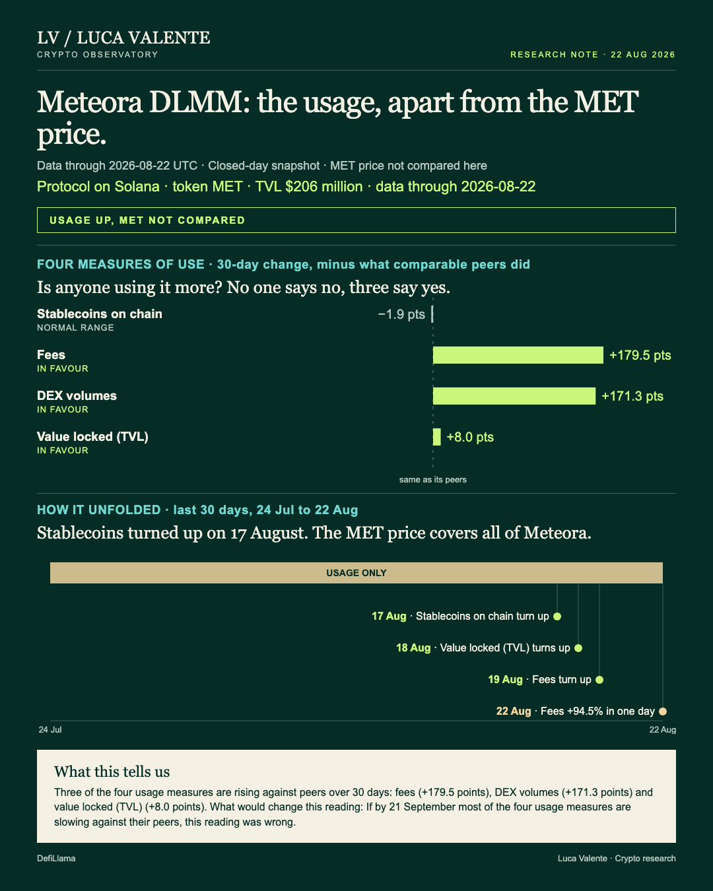
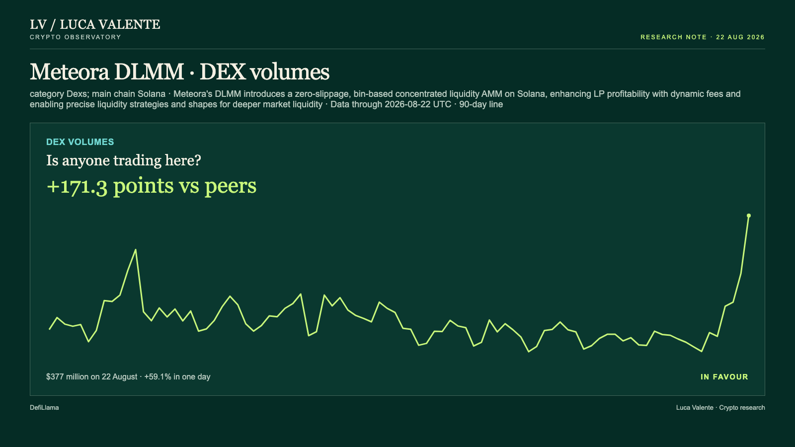

Training note, written on 23 September 2026 from data as of 22 August 2026. Not part of the published series.
Meteora DLMM's Usage Began Turning Up on 17 August

Meteora DLMM's trading volume jumped 59.1% in a single day. That's worth a look for anyone tracking whether people actually use this exchange, separate from what its token is doing.
It's the concentrated-liquidity side of Meteora, an exchange on Solana. It groups liquidity into price bins instead of spreading it evenly; that's what DLMM means. The token, MET, covers all of Meteora, not just this part. The price isn't compared to usage here, and I won't say how it moved.
Four things measure use here: fees, stablecoins on the chain, value locked, and DEX volume. From 24 July to 22 August, they turned up in this order. Stablecoins turned first, on 17 August, then rose in four of the next six days. DEX volumes rose in five of six days from that same date. Value locked turned up on 18 August, rising in four of the five days since. Fees turned up last, on 19 August, rising in three of the four days since. On 22 August, DEX volume reached $377 million, up 59.1% from the day before. Fees reached $985,539 that day, up 94.5% in one day.
Against the Dexs group, three of these four lines are ahead of their peers over 30 days. Fees are up 296.9%. The median for the 17 entities with fee data is 117.4%. That's 179.5 points ahead, and a 90-day high for fees. The previous high was $147,641.
DEX volumes are up 274.4%. The median for 27 entities is 103.1%: 171.3 points ahead. That's also a 90-day high, above the $48 million low set on 25 July.

Meanwhile, value locked is up 12.9%. The median for 18 entities is 4.9%: 8.0 points ahead. But it sits inside its own 90-day range, between $169 million and $211 million, not at either edge. That makes it the weaker of the three.
One measure goes the other way. Stablecoins on the chain are down 3.4% over 30 days. The median for 25 entities is -1.4%: 1.9 points behind. Day on day they were down 0.8%, to $16.19 billion. Over 90 days they've moved between $14.78 billion and $16.93 billion. The latest reading sits in the middle, not at either edge. That's the same pattern as value locked: a middling move, not a sharp break. It's the only one of the four working against the reading, and it's a small move inside its usual span.
This isn't the first time DEX volumes have jumped this much in a day. Today's 59.1% move is the yardstick. Since September 2025, 25 other protocols in the group have had 993 one-day jumps at least that large. On Meteora DLMM itself, that has happened 18 times, most recently on 27 July. A week later, volumes held at or above the day-of-move level in 6 of 18 cases for Meteora DLMM. For the group, that was 304 of 993. A month out, it was 8 of 17 for Meteora DLMM and 253 of 917 for the group. Those totals are smaller because not every jump is old enough yet for a full month behind it. Every one of the other 25 protocols has had at least one jump this size since September 2025. For Meteora DLMM, the outcome leans less common at a week and more common at a month, but the samples are small.
A few things aren't in this reading. There's no public code repository on record for Meteora DLMM, so I have nothing on developer activity. There's no measure of users or wallets either. The four lines above are all there is. There's no news or announcement behind any of this that I can point to; any "because" here would be mine, not the data's. And nothing here goes past 22 August 2026.
Give me until 21 September to see whether this holds. If by 21 September most of the four usage measures are slowing against their peers, this reading was wrong.
What I'd want before calling this more than a usage catch-up is the fee line still leading its range in a few weeks. Today alone doesn't tell me that.
Sources: DefiLlama, CoinGecko, GitHub.
Peer group: 27 exchanges tracked by DefiLlama. 'Net of the group' is the 30-day change minus the group's median.
Not financial advice. This is a research note based on public on-chain data.